Knok Healthcare
April 2017
Knok is an early stage ‘Uber-style’ private health care platform founded by Jose Bastos.
The idea came up when his children fell ill and Jose was unable to book an appointment with
a doctor. Currently based in Portugal, Knok gives patients access to on-demand and in-person
medical support. This is achieved through a native mobile app and web-application that allows
patients to find doctors around them, request immediate home visits and pay for the appointment.
Knok has displayed clear product-market fit (PMF) with strong growth in appointments with a
large number of soft-traction points also achieved including pitching at WIRED, Health 2.0 and
Porto Business School, with coverage on Portuguese TV and Forbes.
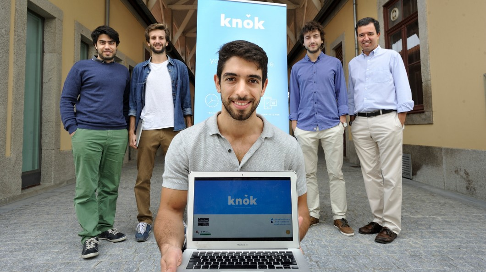
The team has also since grown to incorporate four additional co-founders in Pedro Vieira e
Moreira, Antonio Miranda, Carolina Relvas and Iterar, with the business now bringing skill sets
across finance, risk management, engineering and medicine. The Company has leveraged these skills
to build an exciting healthcare product that has evolved meaningfully from the initial offering
of premium only, to a more inclusive product at a highly competitive price point. This transition
has resulted in compelling growth rates with a 330% growth in appointments, 250% growth in revenues
and 55% growth in registered patients since February.
For this 2 weeks design sprint, I teamed up with two of my classmates: Adolfo Sabino and Spencer
Spottiswoode. When Knok reached out to us, they were about to develop their new video chat feature,
but they were struggling to find a way to integrate it into their existing app. Their existing
version at the time was designed having in mind the on-demand service exclusively. This is
where our opportunity happened.
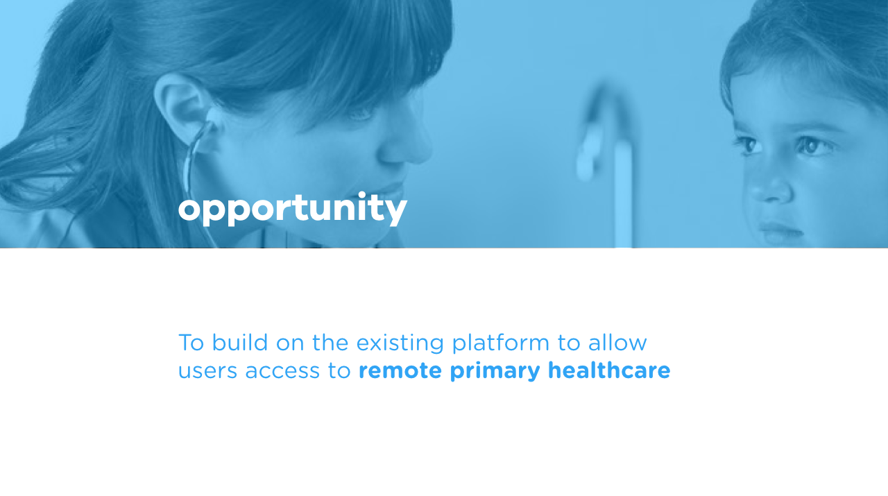
Contextual Inquiry
When it comes to telemedicine, we quickly realized that while offering some great
advantages, this kind of service could be really challenging to put in place. To better
understand the possibilities of that feature and its limitations, we started by talking to
doctors. Here are some of the key takeaways.
Pros:
— Great way to show involvement to patients
— Maintains good relationship
— Ability to check on treatment’s efficiency
Cons:
— Consultations/intervention very limited (prescriptions might not always be possible)
— Can only provide medical advice most of the time
Having a better vision of the constraints for our design, we started the user research.
User Research
After 101survey responses that we converted into 17 user’s interviews, we decided to put
together all the answers through an affinity map and started looking for patterns. Our key
findings from patients interviews are the following:
Current way users handle real-life operations:
— Visits frequency: mostly regular visits
— Scheduling: mostly done over the phone but open to other options (email/through the website)
— Choosing a doctor: a lot of family doctor/family recommendations. Key elements when
looking for a new doctor are empathy, reliability & availability.
Variable affecting feelings towards a doctor:
— Satisfaction: patients want to feel heard, they want the doctor to be clear and they
want to leave the consultation feeling like they have a good understanding of their situation.
— Treatment expectations: practices generally match user’s expectations, although most of
the interrogated people were open to alternative medicine & treatments.
— Frustrations: when appointments are not on time , being exposed to illnesses in the
waiting room and private information being badly handled.
Impressions on video calls
Existing systems: a majority of people prefer Facetime for a few reasons; quality of
the calls, having no login, works with a lot of contacts and already integrated to the phone.
— Remote contact with doctors: people liked the idea of remote medicine, most had a
first contact remotely.
— Follow up: more acceptable for video calls as people like to feel the doctor cares
even after the appointment is over.
— Telemedicine feature: high expectations from patients, but would save time and avoid
commuting for no reason.
At that point, we understood our main challenge was to make sure users can easily identify
the difference between the home visits and video calls in order to understand the value of each
appointment type available and fully enjoy the advantages of both options.
The next question for us to answer was who are we designing for? From all the data collected
during our research, we started building our primary and secondary personas to make sure we will
provide the right solution to the right users.
Meet our users: Maria & Manoel
Maria is 35, she’s a mother of 2 and she wants to take care of her family’s health easily and
efficiently. Her main frustration comes from the difficulty to find available doctors nearby.
Manoel is a 77 years old retired fisherman and he needs to get regular medical check-ups to
keep track of the effects of his multiple treatments. His main pain point is his restricted
mobility, making him dependent on his family for every medical appointment.
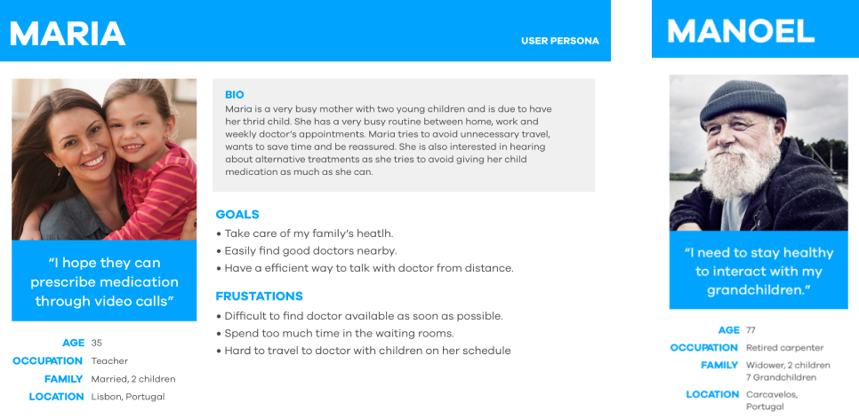
We decided to focus on Maria for two important reasons: One, when looking at the market
research provided to us at the beginning of this sprint, we saw that Maria’s persona fits
the profile for Knok’s existing client base. The second reason is that Maria is the one looking
after the health of her family and being in charge of two young children with a very busy life,
she is the most inclined to be interested in the telemedicine feature.
After putting together all our research we were able to define a solution for our primary
user. We needed to design a new home screen and restructure the current flow to make sure both
home and video appointments flow can coexist seamlessly, and still be clearly distinguished by Maria.
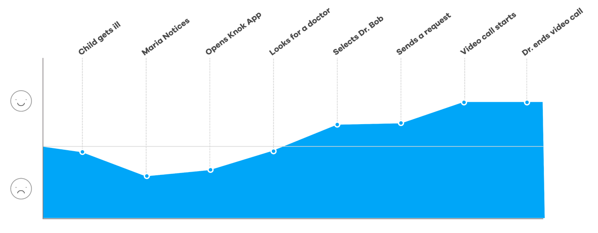
The next step for us was to map out Maria’s journey when she needs to get an appointment
for her sick child. When noticing the illness of her son, she would start to feel worried
and look for help. She would open the Knok app and start looking for a doctor nearby.
Finding doctors available for an immediate video chat would help Maria feel reassured as
she can get the right medical advice. After getting the doctor’s opinion on her child’s
condition, Maria feels relieved and knows she can take care of her son properly.
Having a better understanding of Maria’s needs and pain points, we started the define phase
of our solution. We started by establishing our 3 design principles.
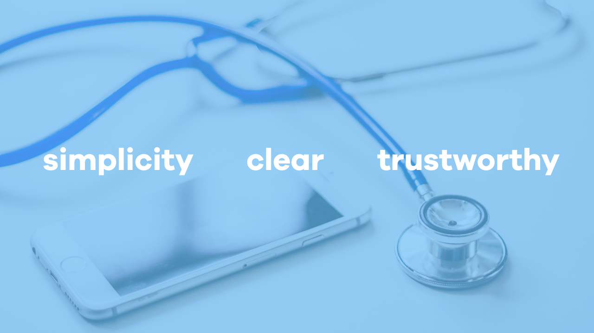
Simplicity: the journey of Maria through the app needs to be as simple and easy as possible,
we don’t want to add any unnecessary stress to a mother looking after a sick child.
Clear: the app and each feature have to be clearly understood by Maria and communicate
it’s action in the most effective way possible.
Trustworthy: Knok’s doctors are all qualified professionals and it’s very important to
make sure Maria is aware of it and reassured on the doctor she’s going to welcome in her house.
Define Phase
We then took those design principles into a design studio session with Tiago (the product
manager) and Andre (the iOS developer) during which we wanted to generate as many ideas as we
could and find a way to align all of our visions on the same product.
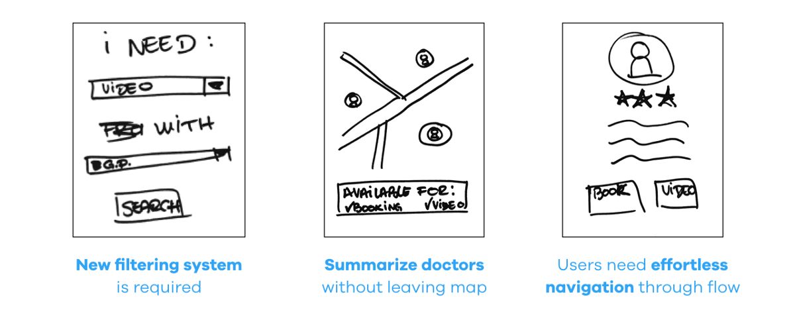
During these 2h30, we came up with three important points that seemed key to the improvement
of Maria’s experience:
- New filtering system: adding a new feature means adding a new goal for our users
and implies a different way to search for doctors. We needed to explore the different ways
users would be looking for medical help to understand the best way to filter doctors.
- Doctor’s summary: because of these new needs and goals, we had to provide user's
information to help them choose between all the doctors nearby. Following our design principles,
clear and simple, we wanted to avoid users having to open each doctor’s profile to be able to
access that information.
- Effortless navigation: now offering two very distinct types of appointments, we had
to ensure Maria would easily understand the options available and be able to choose one without
any confusion.
From these first sketches, our team put together a paper prototype merging the existing screens
of the app to the design studio ideas and we put that prototype to the test.
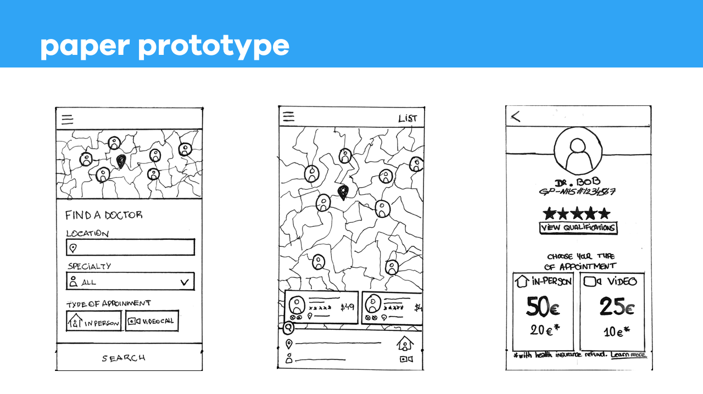
After a few tests, we decided to digitize the prototype into low fidelity and test it again
to have a better understanding of the challenges our users were facing.
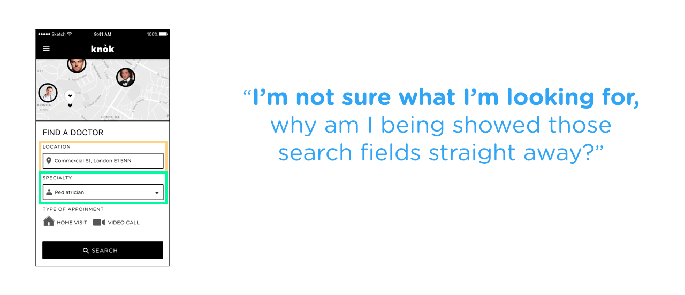
The first iteration we worked on was the home screen/filtering system. On the first version
of the prototype, the app would open straight away to a view of the map minimized at the top
and the search fields on the bottom half of the screen. During testing, we realized our users
were overwhelmed by all this information and slightly confused by the map.
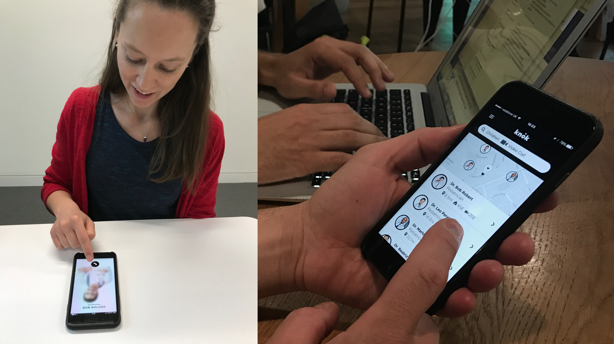
We knew the location of doctors was important information for users when choosing a practician,
even for a video call, as they all mentioned during interviews that they would feel more
comfortable to know the doctor wasn’t too far away. But displaying that information before even
giving the chance to users to start searching was actually quite disturbing for them.
For the second prototype, we tried to take the map showing the doctor’s location away and
separated each step of the filtering process on two distinct screens to focus our user’s attention
on only one information. We also added a message directly addressed to users with a friendly
and more personal tone of voice.
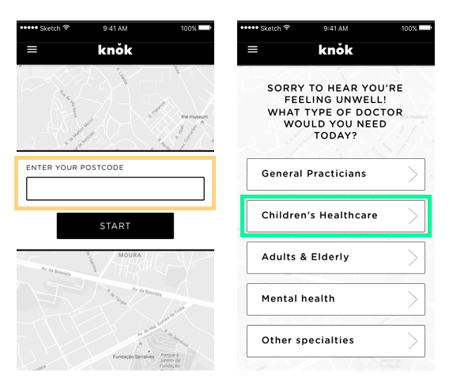
After a couple of tests of that second prototype, we realized users really enjoyed being
addressed personally and felt more trust in the service. They also appreciated the different
steps of the search process being separated but felt like a different screen each time was a
bit too much and felt like a longer process than it really is.
After testing different versions of the same prototype, my team and I felt a bit stuck.
We were moving the same elements around and something was still quite not working, so we decided
to part ways and spend an evening working on a new version separately. We wanted to challenge
our vision of the filtering system and come up with 3 very different takes on this design,
just like we did during the design studio but now taking in consideration all the knowledge
that we had from the results of our tests.
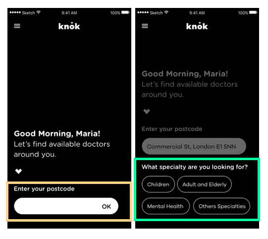
The day after, we presented our individual sketches to each other, merged and refined these
new takes on the filtering process and put together a third prototype. The personal tone of
voice that our users trusted was now put forward and directly guiding users through each
individual step. We made the previous choices still visible, playing with opacity to keep users
focused on the current choice, and limited the search process to one screen.
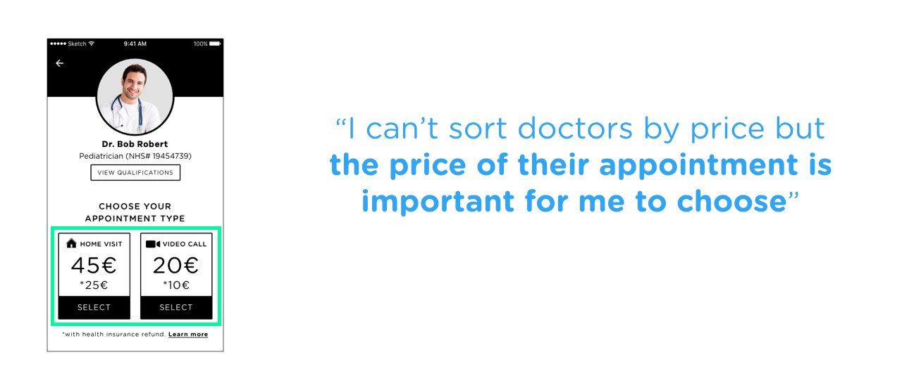
Another part of the flow that was specifically challenging for us was the doctor profile as
users were struggling with two different issues at that stage of the journey. First, the fact
that all appointments cost the same price across all doctors of the same speciality wasn’t
communicated efficiently, the prices being displayed on the doctor’s page would push user’s to
associate the amount to that doctor. Second, the availability of the doctor. Even though only
available doctors would be shown in the search result, users, having learned in real life that
they had to book appointments with doctors, weren’t able to understand that the doctors displayed
on the map were online and available right now.
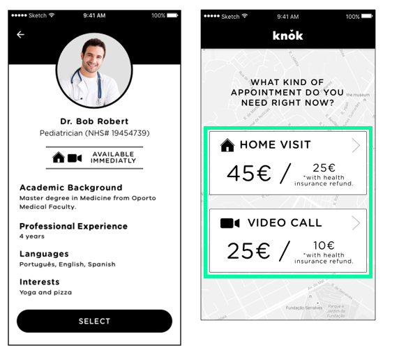
So when designing our second prototype, we decided to add clear icons and status on the doctor’s
page as well as on their summary card visible on the map. We also removed the prices from the
doctor’s profile and tried to specify the prices during the filtering process, associating the
prices to the appointment type. While the availability status and the icons worked very well with users,
seeing a price so early in the flow made users feel like the service was too sales-driven.
In response to user tests, for our third prototype, we tried moving the price later in the flow.
After selecting a doctor, users would confirm the type of appointment they need. What was a
filter option at the beginning of the flow now becomes a choice of service. When tapping
“next”, users were then directed to the payment page where the price was clearly associated
with the type of appointment selected. After further testing, we confirmed that this flow was a
lot clearer for users and solved the problem of associating the price of the consultation to
each doctor.
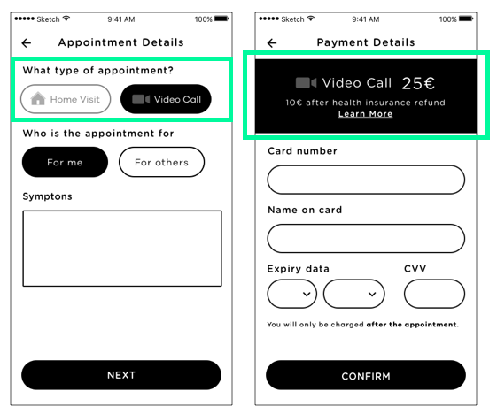
Final Prototype
After two weeks of research and testing, we put together a final prototype that managed to
integrate a new appointment type to the original flow, with a redesigned home page, a new filtering
system and an overall better experience.
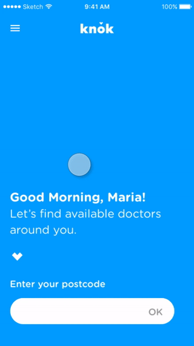
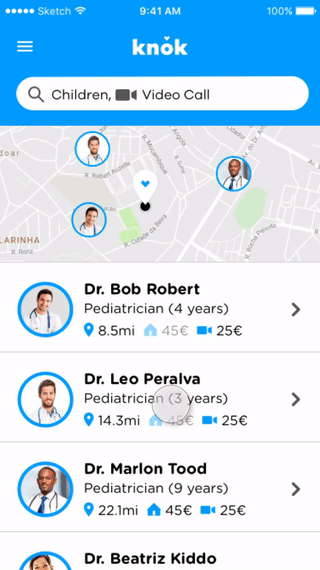
Next Steps
Redesign the doctor flow: after improving the app on the patient side, we would like to have the
chance to improve the doctor’s flow while incorporating the video appointment feature and improve
the experience for both users of Knok.
Improve the rating system: very early during our testing phase, we realized that the current star
rating system Knok uses to get feedback on their doctors is actually off-putting for the majority
of users. The stars feel really dehumanizing and aren’t a complete enough evaluation for a doctor.
Even though we tried different rating system, during this sprint we didn’t get enough time to
really dive in that problem and we would like to explore new ways for Knok’s patients to rate their
experience.
Follow up notifications: when conducting interviews with patients and doctors, we found out the
relationship and the trust that is built between the two parts is the key element of any healthcare
service. To allow both patients and doctors to be able to recreate that connection online, we would
like to explore a way to schedule follow-ups video calls and trigger reminder notifications from
the app.
On-boarding: now offering a new service, we would like to help Knok educate their new users
about the functionalities the app offers.